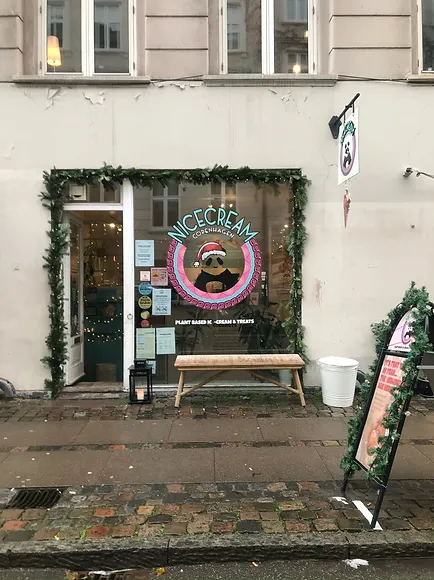
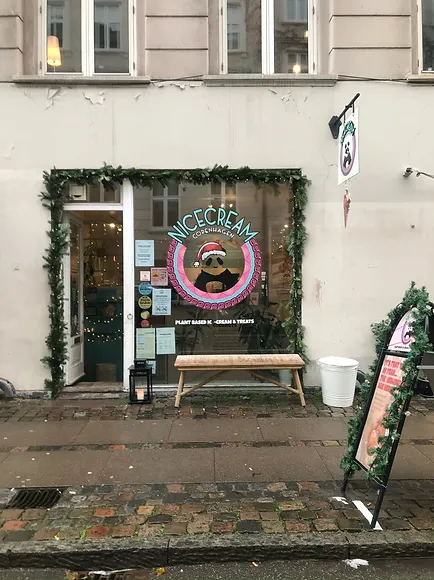

Historien om Nicecream CPH
Ideen om Nicecream Copenhagen dukkede op i hovedet på disse to islandske fyre, der boede i København tilbage i 2014. David og Fannar så et behov for flere lækre plantebaserede muligheder i byen og kastede sig ud i at finde ud af hvordan man kunne sælge ispinde lavet på juice med en is-cykel. På jagt efter et køkken for at kunne producere ispindene endte de med en lille butik på Elmegade 30, og kort tid efter blev den lille butiksfacade ændret til en produktion og en is-butik, der havde udsolgt næsten hver dag! Elmegade er stadig den dag i dag vores travleste butik, selvom den er mindst. - og vi ELSKER DEN! Siden butikken åbnede i 2015 har vi åbnet 4 nye Nicecream butikker og er blevet populære på festivaler og events, alt imens vi fyldte Danmarks supermarkeder op med Nicecream. Nicecream teamet har haft TRAVLT! Fokus var dengang og vil altid være at producere den bedst smagende is ved hjælp af plantebaserede økologiske ingredienser af høj kvalitet! Og vi er langt fra at stoppe!
Vores ingredienser
Vores base er økologisk kokosmælk blandet med økologisk rørsukker & de bedste kvalitetsråvarer. Med det kan vi producere is med fantastisk smag, tekstur & stor visuel oplevelse.
Bæredygtighed
Vi gør alt vi kan for at bruge 100% bæredygtigt og genanvendeligt emballage til vores produkter. Vi tilbyder derudover 10% rabat til alle der medbringer egen emballage til vores butikker. På den måde er vi med til at reducere affald & gøre vores kunder mere miljøbevidste.
Vi gør dit event ekstra specielt
Book os til dit event uanset hvor stort eller småt det måtte være! Vi kan komme til dit hus, arbejdsplads, bryllup eller hvor end du ønsker at vi kommer. Vælg mellem scoops i vaffel og bæger, ispinde eller vores bøtter med is og ske, vores populære is-sandwich... listen fortsætter. Hvad end du ønsker af kombinationer og løsninger passer dit event bedst. Vi tilbyder alt fra partyboxes til en campingvogn fyldt med is. Det er kun fantasien der sætter grænser.
 
